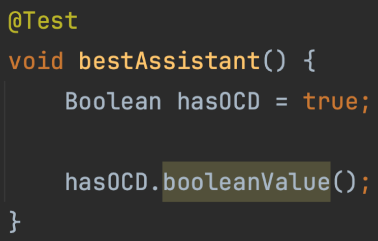
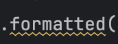
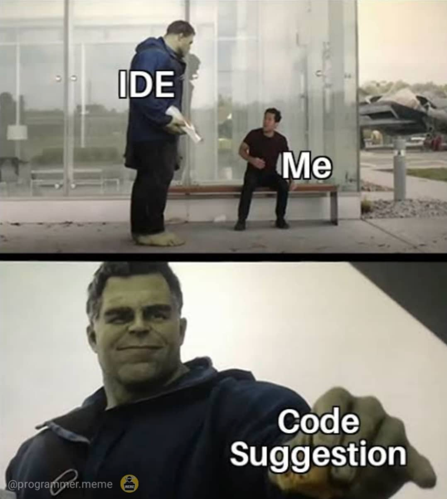

Mastering the
Java Streams API
for-loops to pipelines, with the pitfalls includedWho am I?
- Jente, Software Engineer at Colruyt Group
- Support the development teams when they have issues …
- … and in the meantime renovate our IT landscape, discovering new roadmap items
- Last year: automating code refactoring and version updates, and Kubernetes / containerization
Open source contributor
- OpenRewrite / Moderne.ai
- Backstage
- ArgoCD
- Liquibase
"The entire world knows more than just one company."
Big fan of the Advent of Code, several years in a row.
Agenda
- Who am I?
- Introduction: the tools, the IDE suggestions and the domain
- Streams explained (and how to debug them)
- What is a Stream
- Stream Initialization
- Stream Intermediate operations
- Stream Terminal operations
- Pitfalls
- Exercises: practice makes perfect
Tools
| Tool | Notes |
|---|---|
| Terminal | iTerm2 on macOS, Windows Terminal on Windows, any terminal on Linux |
| sdkman | optional, handy to install and switch Java versions |
| Java 25 (LTS) | via sdkman or any distribution |
| Gradle | use the wrapper in the repo: ./gradlew (gradlew.bat on Windows), nothing to install |
| IntelliJ IDEA | with the Learn and Teach plugin |
| JUnit + AssertJ | already configured in the project |
How this course works
Theory lessons
Open src/Main.java, read it top to bottom and run it.
Output tasks
Finish the TODO. Your program's output must match the expected output.
Exercises
Implement the method. The unit tests tell you when you are done.
Pitfalls
This code is broken on purpose. Run it and watch what goes wrong.
You should be comfortable with…
- Java syntax, collections (
List,Set,Map) andfor-loops - Records: all domain classes are records
- Lambdas and method references:
x -> x * 2,String::length
Not sure about lambdas? The next slide is the reminder.
Cheat sheet: functional interfaces
Exactly one abstract method, so a lambda or method reference can implement it.
| Interface | Method | Meaning | Example |
|---|---|---|---|
Predicate<T> | boolean test(T) | yes or no about a value | s -> s.isEmpty() |
Function<T,R> | R apply(T) | turns a value into another value | String::length |
Consumer<T> | void accept(T) | does something, returns nothing | System.out::println |
Supplier<T> | T get() | produces a value from nothing | ArrayList::new |
BinaryOperator<T> | T apply(T, T) | combines two values of one type | (a, b) -> a + b |
Comparator<T> | int compare(T, T) | orders two values | Comparator.comparingInt(String::length) |
IDE code suggestions
When you see

or

you must realize

Four records, used everywhere
| Concept | Record | Accessors |
|---|---|---|
| Article | Article(int id, String name) | id() name() |
| Customer | Customer(int id, String name, String lastName) | id() name() lastName() |
| Order | Order(int id, int customerId, boolean paid, List<OrderLine> orderLines) | id() customerId() paid() orderLines() |
| Order line | OrderLine(int articleId, int quantity, double price) | articleId() quantity() price() total() |
- An order line is a single sale of one article: which (
articleId), how many (quantity), unitprice. - References are plain ids, not objects: to get from an id to the
ArticleorCustomeryou look it up. OrderLine.total()isprice * quantity.
The orders

Each row is one order. Green phone = paid, red phone = unpaid. The icons are the order lines.
- 10 articles: Coffee, Pizza, Candy, Pineapple, Donuts, Beer, Apple, Taco, Chicken, Ice Cream
- 5 orders: 3 paid (1, 2, 5), 2 unpaid (3, 4)
- Customers only appear in the exercises
What is a Stream?
Sum of all order line prices
for loopHint. OrderLine has a total() method. Turn the stream into a stream of doubles, then add them up.
While the stub is unsolved, the second line prints EUR0.00.
A pipeline has three parts
Source
where the elements come from
Database.orderLines.stream()Intermediate
zero or more steps that transform the stream
.filter(...) .map(...)Terminal
exactly one: produces the result and starts the pipeline
.sum() .toList()Warehouse replenishment
Every paid order is replenished with the same quantity of each article. Several orders ship in one delivery, so quantities per article are added up. Unpaid orders are ignored.
- Order 1 (paid): 2 Pizza, 1 Candy
- Order 2 (paid): 1 Pizza, 1 Beer
- Order 3 (not paid): 5 Coffee
→ deliver 3 Pizza, 1 Candy, 1 Beer
This task goes beyond what you have seen so far. This is the moment to let an AI assistant (Copilot, Claude) help you.
filterfor theifflatMapfor the inner loop- a collector for the
Map
Stream Initialization
collection.stream()
null.stream() throws a NullPointerException. Next slides: Stream.ofNullable.
From values and other streams
Stream.of(…)
Stream.concat(…)
Stream.builder()
Stream.concat.range vs rangeClosed
the end value is excluded: 1 … 9
the end value is included: 1 … 10
IntStream and LongStream are primitive streams: no boxing, and extras like sum() and average().
range excludes the end value, rangeClosed includes it.Also good to know
| Source | What you get |
|---|---|
Stream.empty() | a stream without elements |
Arrays.stream(array) | a stream from an array |
Stream.generate(supplier)Stream.iterate(seed, next) | infinite: always combine with limit |
Stream.iterate(seed, hasNext, next) | the finite, for-like variant |
"text".chars() | an IntStream of the characters |
map.entrySet().stream() | a stream over a Map |
Files.lines(path) | a stream of the lines of a file |
generate and iterate are infinite: always combine them with limit.Intermediate operations
What changes between input and output?
| Operation | Count and type | Meaning |
|---|---|---|
filter | fewer elements, same type | keeps what matches the condition |
map | same number, new type | one output per input |
flatMap | one-to-many, merged into one stream | e.g. order → its order lines |
distinct | fewer elements, same type | drops duplicates; its position changes how much work follows |
Demonstrated in Main. The next slide lists the operations that are not demoed.
More intermediate operations
| Operation | What it does |
|---|---|
skip(n) | drops the first n elements |
limit(n) | keeps at most the first n elements (makes an infinite stream finite) |
takeWhile(p) | keeps elements until the condition is false for the first time, then stops |
dropWhile(p) | drops elements until the condition is false for the first time, then keeps the rest |
sorted() | same elements, new order (needs to see all elements first) |
peek(c) | same elements, runs an action on each on the way past (debugging only) |
mapToInt → IntStream | same count, primitive ints |
mapToDouble → DoubleStream | same count, primitive doubles |
mapToLong → LongStream | same count, primitive longs |
The same step, four ways
Names of articles in paid orders
filter: 5 orders → 3 paid ordersmap+flatMap: orders → one stream of linesmaptwice: line → id →Article(a lookup!)distinct: no article twiceforEach: the terminal operation that starts it all
Same result, different amount of work
Both run 10 000 times and print their timing. distinct first looks up each article once, distinct last looks up every order line.
peek: quick, but it edits your code
- Put it between two stages, read what flows past. Move it one stage further and compare.
- Elements arrive one at a time, interleaved with later stages, not stage by stage (laziness).
For debugging only.
You have to change the code (and remove it again). A peek whose action changes state is a bug waiting to happen. The JDK documents it as existing mainly to support debugging.
peek is intermediate: a pipeline of only intermediate operations prints nothing.
Breakpoints inside lambdas
- Open
Main, find the lambda infilter(order -> order.paid()). - Click in the gutter next to that line, then start with Debug.
- The breakpoint is hit once per element. Look at
orderin the Variables view. - Resume Program jumps to the next element; step to follow one element through the chain.
When a line holds more than one candidate, the gutter shows small circles inside the line (a line breakpoint and one per lambda) so you choose which you mean.
The chain in actionsCanBeChained uses method references only, so there is no lambda body to stop in. Use the stream trace there, or temporarily turn a reference into a lambda.
Trace Current Stream Chain
- Breakpoint on the line where the stream starts in
actionsCanBeChained(Database.orders.stream()). Run in Debug. - In the toolbar of the Debug window open More → Trace Current Stream Chain.
- The Stream Trace dialog has a tab per stage: what it received and what it returned. Flat Mode shows everything in one overview.
Good to know
- Comes with the Java Stream Debugger plugin (installed and enabled?)
- The stream must end with a terminal operation. Result-less ones such as
forEachare not drawn in Flat Mode. - Only works on your own project code, not library code.
filter, distinct) or changed (map).Reading a stack trace through java.util.stream
- Many frames from
java.util.stream(ReferencePipeline,Sink,AbstractPipeline) sit between your lambda and the terminal operation: that is plumbing, ignore it. - Read from the top for the exception type and message, then find the first frame in your code: the lambda that failed (
Main.lambda$…). - The last frame of your code lower down is the line with the terminal operation that started the pipeline.
- The trace does not say which element failed: use a lambda breakpoint (with a condition) or
peek. - Because of laziness the failure happens at the terminal operation, not where you wrote the faulty
map.
peek for a quick look · lambda breakpoint for one element · Trace Current Stream Chain for the whole chain.Terminal operations
The operations in Main.java
| Operation | What it does |
|---|---|
collect(Collectors.toList()) | collects the elements into a List |
collect(Collectors.toSet()) | a Set: duplicates disappear, no order guaranteed |
toUnmodifiableList() / toUnmodifiableSet() | a collection that cannot be changed afterwards |
collect(Collectors.joining("|")) | glues String elements into one String |
count() | number of elements left in the stream |
mapToDouble(…).sum() / average() / max() / min() | totals on a primitive stream; average, max, min return an optional, hence orElse(0) |
summingDouble(…) / averagingDouble(…) | the same totals, as a Collector |
max(Comparator) / min(Comparator) | largest or smallest by a Comparator, e.g. comparingDouble |
findFirst() | first element, and stops the stream there |
Three ways to get a List
| Call | Result list | null elements |
|---|---|---|
collect(Collectors.toList()) | an ArrayList in practice, not guaranteed | allowed |
.toList() Java 16+ | unmodifiable: add throws UnsupportedOperationException | allowed |
collect(Collectors.toUnmodifiableList()) | unmodifiable | rejected: NullPointerException |
IntelliJ suggests .toList(). Accepting is fine, but collectingIntoCollection calls add on the result of collect(Collectors.toList()): it breaks when you accept the suggestion.
Money as double? The demos do, to keep code short. In real code use BigDecimal: double cannot represent amounts such as 0.1 exactly.
The terminal operation decides how much work happens
Orders 4 and 5 are never touched: findFirst short-circuits. Elements flow through one at a time.
Collectors cheat sheet 1 / 2
| Collector | Example on the course data | Result |
|---|---|---|
groupingBy(key) | orders.stream().collect(groupingBy(Order::customerId)) | customer id → list of their orders |
groupingBy(key, counting()) | …groupingBy(Order::customerId, counting()) | {1=2, 2=2, 3=1} |
groupingBy(key, summingDouble(…)) | …groupingBy(Order::customerId, summingDouble(Order::total)) | {1=20.5, 2=13.0, 3=5.5} |
groupingBy(key, mapping(f, toList())) | …groupingBy(Order::customerId, mapping(Order::id, toList())) | {1=[1, 2], 2=[3, 4], 3=[5]} |
groupingBy makes a Map<key, List>. Add a downstream collector (counting, summingDouble, mapping) to count, sum or transform each group.Collectors cheat sheet 2 / 2
| Collector | Example on the course data | Result |
|---|---|---|
partitioningBy(p) | orders.stream().collect(partitioningBy(Order::paid, counting())) | {false=2, true=3} |
toMap(key, value, merge) | orderLines.stream().collect(toMap(OrderLine::articleId, OrderLine::quantity, Integer::sum)) | total quantity per article id: {1=5, 2=2, 3=2, 5=1, 7=2, 8=3, 9=2, 10=2} |
summarizingDouble(…) | orderLines.stream().collect(summarizingDouble(OrderLine::total)) | count=18, sum=39.0, min=0.6, average=2.1666…, max=6.0 |
teeing(c1, c2, merger) | orders.stream().collect(teeing(counting(), summingDouble(Order::total), (count, sum) -> count + " orders, " + sum)) | 5 orders, 39.0 |
Without a merge function toMap throws IllegalStateException on a duplicate key: Duplicate key 1 (attempted merging values 1 and 1). partitioningBy always has exactly two keys.
A Map has no guaranteed order either: sort (or use a TreeMap) before you compare printed output.
Sorting
reversed() flips the whole comparator built so far, so place it where you want it. When the lambda in Comparator.comparing needs a type, write it on the parameter: (Article a) -> ….
Boolean questions and reduce
| Operation | Example on the course data | Result |
|---|---|---|
anyMatch(p) | orders.stream().anyMatch(o -> !o.paid()) | true |
allMatch(p) | orders.stream().allMatch(Order::paid) | false |
noneMatch(p) | orderLines.stream().noneMatch(l -> l.quantity() > 2) | true |
reduce(identity, acc) | orderLines.stream().map(OrderLine::total).reduce(0.0, Double::sum) | 39.0 |
reduce(acc) | orderLines.stream().map(OrderLine::total).reduce(Double::max) | Optional[6.0] |
anyMatchstops at the first hit;allMatchandnoneMatchstop at the first miss. On an empty stream:false,true,true("all of nothing" is vacuously true).findAny()isfindFirst()without the promise: preferfindFirst().reduceis the general form ofsum,maxandcount, butmapToDouble(…).sum()is usually better: shorter, and no boxing.
Handling an Optional
min, max, findFirst, findAny, average, reduce(acc): the stream may be empty, so you must decide what "nothing" means.
| Call | When empty |
|---|---|
orElse(-1) | -1 (the argument is always evaluated) |
orElseGet(() -> -1) | -1 (the supplier only runs when empty: use it when the fallback is expensive) |
orElseThrow(() -> new IllegalStateException(…)) | throws that exception |
orElseThrow() | throws NoSuchElementException: No value present |
ifPresent(consumer) | does nothing |
map(f) | stays empty |
orElse(null) is a smell: it turns the explicit "maybe" back into a null the next reader may forget to check. Choose on purpose: a meaningful default, orElseThrow when absence is a bug, or keep working inside the Optional.
What is new since Java 8
The course code is Java 8 style on purpose (IntelliJ's suggestions start from it), but the baseline is Java 25.
| Feature | Since | Example | Result |
|---|---|---|---|
toList() | 16 | Stream.of("a", null, "b").toList() | [a, null, b], unmodifiable |
ofNullable(x) | 9 | Stream.ofNullable(maybeNull).toList() | [] for null |
iterate(seed, hasNext, next) | 9 | Stream.iterate(1, n -> n <= 16, n -> n * 2).toList() | [1, 2, 4, 8, 16] |
takeWhile / dropWhile | 9 | names.stream().takeWhile(n -> n.compareTo("D") < 0) | [Apple, Beer, Candy, Chicken, Coffee] |
Collectors.teeing | 12 | two collectors, one pass | 3 paid / 2 unpaid |
mapMulti | 16 | Stream.of(1,2,3).<Integer>mapMulti(…) | [1, 10, 3, 30] |
unnamed lambda parameter _ | 22 | Stream.of(1, 2).map(_ -> "x").toList() | [x, x] |
| Gatherers | 24 | custom intermediate operations | next slide |
Gatherers: custom intermediate operations
A collector can only end a pipeline; a gatherer is an intermediate operation, so the stream goes on. Final since Java 24: on JDK 25 no --enable-preview. Ideal for operations that look at more than one element: windows, running totals.
| Gatherer | Example | Result |
|---|---|---|
windowFixed(n) | names.stream().gather(Gatherers.windowFixed(3)).toList() | [[Apple, Beer, Candy], [Chicken, Coffee, Donuts], [Ice Cream, Pineapple, Pizza], [Taco]] |
windowSliding(n) | names.stream().limit(4).gather(Gatherers.windowSliding(2)).toList() | [[Apple, Beer], [Beer, Candy], [Candy, Chicken]] |
scan(init, f) | Stream.of(1,2,3,4).gather(Gatherers.scan(() -> 0, Integer::sum)).toList() | [1, 3, 6, 10] |
fold(init, f) | Stream.of(1,2,3,4).gather(Gatherers.fold(() -> 0, Integer::sum)).toList() | [10] |
scan on the order totals gives the running revenue [6.7, 20.5, 27.1, 33.5, 39.0]: the last value is the 39.0 that sum() returns.Key takeaways
- A terminal operation starts the pipeline; without one nothing runs.
- Prefer
.toList()unless you need a mutable list or wantnullrejected. - Never rely on the order of a
Set(orMap) when printing or comparing: sort first. findFirst()and other short-circuiting operations can stop the pipeline early.groupingBy→Map<key, List>;partitioningByalways has exactly two keys;toMapfails on duplicate keys without a merge function.reduceis the general fold, butsum()is usually better.- An
Optionalsays "maybe nothing": pick a default, throw, or keep mapping.orElse(null)hides the problem again. - Gatherers (final in Java 24): windows, running totals and folds that collectors cannot express.
Pitfalls
Endless streams
limit(10)1. A never-ending 0 1 0 1 0 1 …. After 10 s the lesson stops waiting, but the pipeline keeps running in the background.
2. Prints 0 1 and then hangs, while the first pipeline is still flooding the console.
The output is huge and the program does not stop by itself: press the red Stop button in IntelliJ.
Why it goes wrong, and how to fix it
Why
iterate(seed, next)has no end. Only a short-circuiting operation (limit,findFirst,takeWhile,anyMatch…) can end it.- The timeout only stops waiting:
forEachnever checks for interruption and the executor is never shut down. distinct()beforelimit(10): the stream only ever holds two distinct values, so after two elements nothing passes andlimitwaits for ten that never arrive.
Fix
takeWhile(i -> i < 10) would not help here: on 0 1 0 1 … the condition is always true.
limit and skip: guess first
How many numbers does it print? Guess, then run it.
limit(10).skip(5): take the first 10 (0..9), then drop the first 5 → 5 numbersskip(5).limit(10): drop the first 5, then take 10 (5..14) → 10 numbersfilter, map, distinct, limit and skip can change the result, not only the speed.Calling a service inside a loop or stream
Database.getArticle(id) pretends to be a remote call (100 ms). 18 order lines = 18 calls per run. The bulk variant makes one call (300 ms) and uses a Map.
That is the N+1 problem: one call to get the lines, plus N calls to get the details.
A for loop and a stream are equally slow here. The stream only makes it harder to notice, because the call hides inside a lambda.
Four timings, one ratio
Each variant runs the same work 10 times. Measured on JDK 25, Apple silicon. The absolute numbers vary per machine, the ratio does not.
map, filter or a loop body if you can fetch in bulk first. About 6x faster.Exercises
CourseTests tell you when you are done.Filter customers
Open src/Exercise1.java. Each method returns an empty list. Matching is case-insensitive.
| Method | Customers whose … |
|---|---|
listOfAllCustomersWhereLastNameContainsE | last name contains e |
listOfAllCustomersWhereLastNameContainsEAndNameContainsL | last name contains e and first name contains l |
listOfAllCustomersWhereAnyFieldContainsO | first name or last name contains o |
Done when all three tests are green. A test failure shows which customers are missing or unexpected.
filter keeps what matches, and a condition can combine tests with && and ||. Lowercase the text before you compare.Names in one list
Open src/Task.java and complete returnAllCustomerNamesAndArticlesNames.
Return one list of strings: all customers as "firstname lastname" and all articles by name, in any order.
Customers John Doe, Jane Doe and articles Coffee, Pizza give
["John Doe", "Jane Doe", "Coffee", "Pizza"] (any order).
Green when the list has 44 entries (34 customers + 10 articles) and contains e.g. "John Doe", "Jente Sondervorst", "Elinor O'Quinn", "Coffee", "Ice Cream".
map turns different element types into one common type. Two streams of the same type can be combined into one result.Unique article names in unpaid orders
Open src/Task.java (it returns null) and complete returnAllArticleNamesInUnpaidOrders.
Return the names of all articles that appear in unpaid orders. Every name only once, in any order.
Order lines only contain an articleId: use the articles list to look up the name.
On the sample Database the test is green when the list holds exactly four names: Chicken, Ice Cream, Coffee and Taco.
What to remember
Source
collection, values, range
Intermediate
lazy, chainable, order matters
Terminal
starts the pipeline
- Reading a pipeline top to bottom tells you what each step receives.
- Infinite streams need a short-circuiting operation, in the right place.
- Fetch in bulk before the stream; keep lambdas pure and in-memory.
- Let IntelliJ's suggestions teach you, and debug with breakpoints or Trace Current Stream Chain.